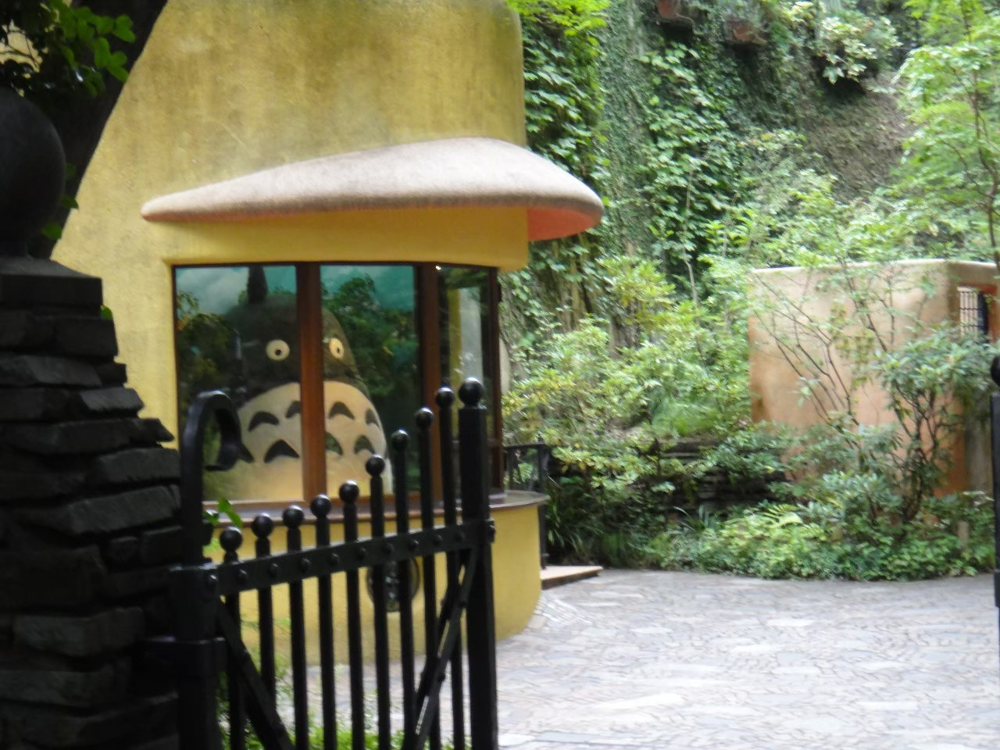
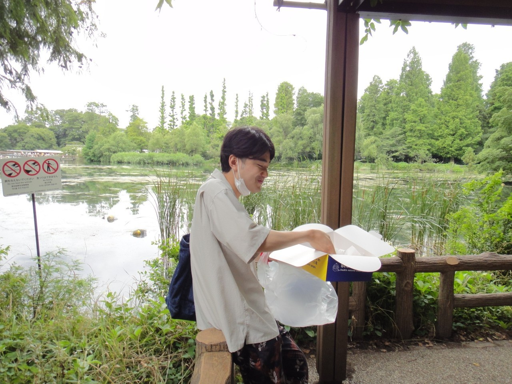

三鷹・吉祥寺散歩
～三鷹の森 ジブリ美術館～
06/27 2021
カテゴリー：通常散歩
 東京都三鷹市・武蔵野市
東京都三鷹市・武蔵野市
今回は東京23区外を散歩してきました。
東京都武蔵野市と三鷹市にある『井の頭恩賜公園』を散歩してきました。井の頭公園は歴代の散歩サークルで絶対に訪れる場所として君臨している由緒正しきお散歩スポットです。2021年度においても無論、訪問しました。
例年はJR吉祥寺駅北口にある『吉祥寺ダイヤ街』近辺を散歩するのですが、いかんせん人が多いので自然豊かな公園を散歩することに決めました。
三鷹の森ジブリ美術館 井の頭公園をしばらく歩いていると「三鷹の森ジブリ美術館」が見えてきました。例のアレがお出迎えしてくれる素敵な場所です。チケットを購入するのが大変だとか？ 私はよく幼少期の頃、誕生日に来館していた思い出があります。
井の頭池のほとりにて  ずっと歩いていると疲れるので、休憩しながら散歩を楽しみました。
メジャーな場所として名高い吉祥寺ですが、納得の理由だと痛感します。新宿や渋谷へのアクセスも良好で、23区外とは思わせない素敵な立地です。大きな公園もあり、休日はゆったりと過ごせる環境が備わっており、素敵だと思います。住めるもんなら住んでみたい、それが吉祥寺。